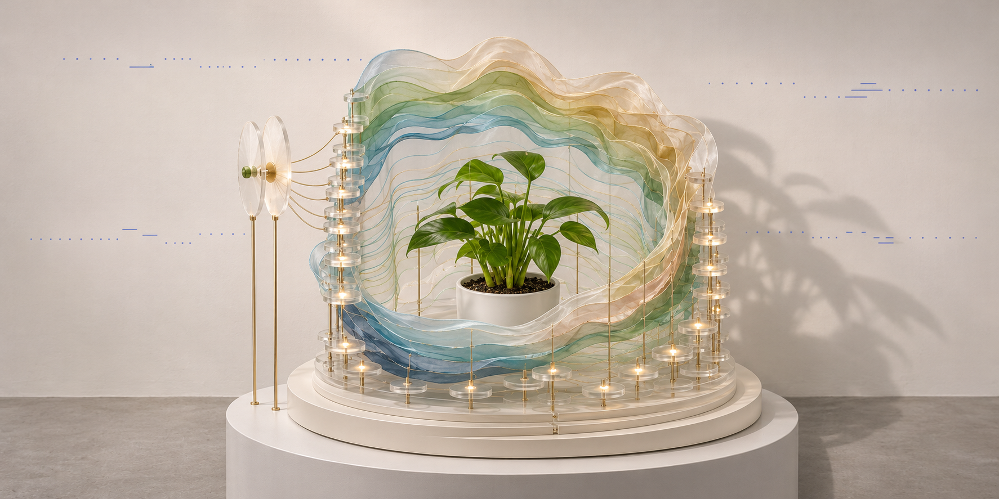

PROJECT 03
AFTER EXPRESSION
/ LIVING TRACES
这是工业设计交互装置项目的第一阶段软件演示。工作名暂时并列保留。参与者输入并确认一段文本，系统将它转成摩斯节奏，同时生成声音与蓝白粒子画面，最后留下可回看的数字事件记录。
01 / THE ENCOUNTER

装置概念图。保留中央真实盆栽、多层半透明波纹层片、竖向细杆、圆形灯节点、圆形底座与侧边确认端。概念图不作为实体设备已建成或已运行的证明。
02 / ONE SCORE, TWO OUTPUTS
确认后的编码文本只支持 A–Z、0–9 和半角空格。原句可以保留中文；中文和标点不会被系统静默删除，编码文本需要手动输入并确认。
HELLO
.... / . / .-.. / .-.. / ---
120 ms / unit · 31 segments · 5.88 s total · 3.12 s tone request
.... / . / .-.. / .-.. / ---
120 ms / unit · 31 segments · 5.88 s total · 3.12 s tone request
点、划与间隔来自一份确定性的时间表。声音采用 600 Hz 纯音，光场按事件节奏激发、扩散与衰减。它属于 rhythm-driven 的生成视觉，本版没有把画面称为植物测量，也没有声称完成音频分析。待机时的弱光与漂移是视觉设计。
03 / WHAT YOU CAN TRY
打开交互演示，保持默认 HELLO，确认后开始。可以听见摩斯节奏、观看光场、手动停止，再到下方档案查看或导出 JSON。浏览器首次播放需要点击操作；没有音频设备时可以选择静音。切换后台会中断当前演示。
04 / CURRENT BOUNDARIES
| 通道 | 本次在线演示 |
|---|---|
| 输入 | 网页文本输入与确认；圆形实体端为概念设计，不代表语音识别已实现。 |
| 声音与视觉 | 浏览器 WebAudio 与原创 WebGL 粒子；现场 TD 工程另行运行。 |
| 植物与实体灯 | 未连接，不提供植物读数、植物响应、实体灯光或真实曝光成功的声明。 |
| 记录 | 只保存在访问者当前浏览器，最多最近 30 次，可导出 JSON。没有事件上传或跨设备同步。 |
05 / ACTUAL SOFTWARE CAPTURE
实时浏览器 Canvas 的实际录制，静音。该视频不是 AI 生成影像，也不表示完成实体投影展览。